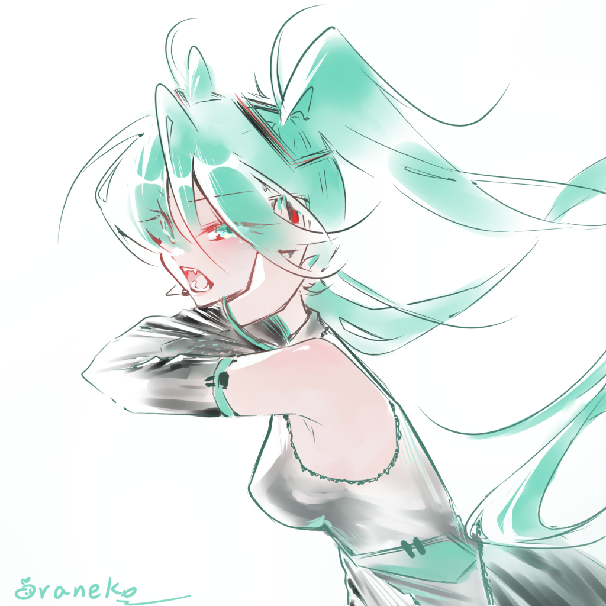

Illustration gives me a way to explore color, character, and emotion through visual design. Hatsune Miku is one of my favorite characters to draw because of her recognizable turquoise palette and distinctive silhouette. Her design can feel energetic, futuristic, and delicate at the same time, which gives me many possibilities when creating an illustration.
When I draw Miku, I like to keep the qualities that make her immediately recognizable while interpreting them through my own style.